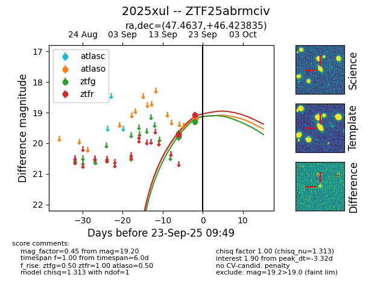
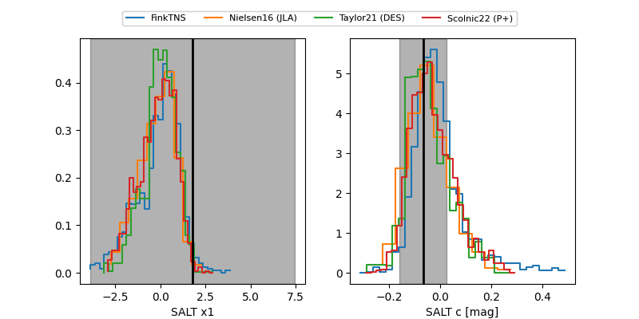

FINK: ZTF25abrmciv
Lasair: ZTF25abrmciv
ALeRCE: ZTF25abrmciv
TNS: 2025xul
YSE: 2025xul
ZTF25abrmciv (ztf,fink)
2025xul (tns,yse)
equatorial (ra, dec) = (47.4637,+46.42383)
galactic (l, b) = (146.3586,-10.05622)


last atlaso=19.20, ztfg=19.29, ztfr=19.08
1 atlaso, 3 ztfg, 2 ztfr detections